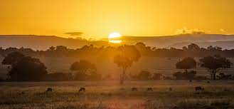
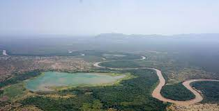
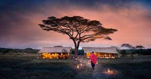
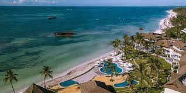
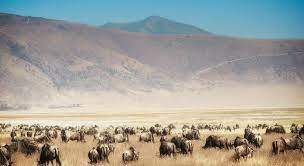
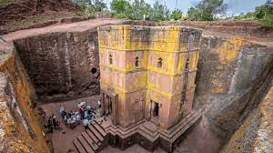
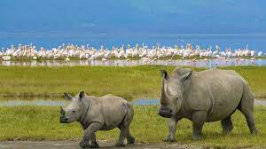

Most Popular Tourist Destinations in East Africa
1. Maasai Mara National Reserve, Kenya

Kenya's Maasai Mara National Reserve has earned itself a reputation
as one of Africa's most rewarding safari destinations,
and for good reason. Regardless of the time of year,
wildlife sightings are both plentiful and diverse.
It's possible to see the Big Five in a single day,
and during the July-November dry season, the plains
are filled with the vast herds of the annual wildebeest migration.
In particular, watching the herds crossing the Mara River in their
thousands is a spectacle few will ever forget. Cultural visits to
traditional Maasai villages are another highlight of this spectacular East African reserve.
2. Omo River Region, Ethiopia

Part of Africa's incredible Great Rift Valley,
the Omo River Region is perhaps one of the most remote destinations in East Africa.
However, those that are willing to make the long and difficult trip to get there will be rewarded
with incredible scenery, and the chance to visit villages that have remained unchanged for hundreds
of years. There are many different tribes in this part of Ethiopia, and each one has its own
traditional dress, culture and ceremonies. In order to get the most out of your Omo River experience,
it is advisable to join a tour, some of which combine cultural visits with white-water rafting on
the region's famous rapids.
3. Volcanoes National Park, Rwanda

Draped in mist and full of lush vegetation,
Rwanda's Volcanoes National Park nestles deep within the Virunga Mountains
. As Africa's oldest national park, it is one of the best places in the world to encounter
the critically endangered mountain gorilla. A subspecies of the wider-ranging eastern gorilla,
there are only around 800 of these amazing animals left. To share a moment with them in their
natural environment is an intensely moving experience and one that should be at the top of
any wildlife lover's bucket list. The park provides a home for several other rare species,
including 29 endemic species of bird.
4. Serengeti National Park, Tanzania

Those in search of the ultimate safari experience should consider combining
a trip to the Maasai Mara with a visit to Serengeti National Park in neighboring Tanzania.
Here, breathtaking open plains are dotted with acacia trees and grazing game.
It's a great place to spot predators like lion and cheetah in action;
especially during the January-March rainy season. At this time,
wildebeest descend upon the southern Serengeti to give birth,
and the newborn calves make easy prey for hungry cats.
In April, the herds start their migration to the Maasai Mara,
but the game-viewing remains exceptional all year round.
5. Watamu, Kenya

Unlike many of Kenya's other beach towns,
Watamu is still considered an enclave of peace and quiet.
Located slap bang in the middle of Kenya's exquisite coastline,
Watamu is small, relaxed and full of history. It is best known for its stunning
bays and palm-fringed beaches, and for its prolific coral reefs.
Deep-sea fishing is a favorite pastime here, and several dive schools offer
the chance to take up scuba diving. On land, beachfront restaurants serve fresh seafood,
Mida Creek boasts stunning birdlife, and Gedi Ruins offers an insight into the life of the
13th Century Swahili people.
6. Ngorongoro Conservation Area, Tanzania

Tanzania's Ngorongoro Conservation Area is dominated by the ancient Ngorongoro Crater.
Approximately 1,970 feet/ 600 meters deep, the crater is the world's largest intact caldera,
and one of East Africa's most incredible natural spectacles.
Within its rim, countless animals range across the grassy plains of the crater floor,
including a significant population of critically endangered black rhino and some of
the largest remaining tusker elephants. Black-maned lions are another impressive sight,
as are the flocks of flamingo that appear on the crater's soda lake during the breeding season.
7.Mount Kilimanjaro, Tanzania

Perhaps one of the continent's most iconic sights,
Mount Kilimanjaro stands in perfect isolation against the foreground of the African savannah.
At 19,340 feet/5,895 meters, it is the tallest peak in Africa and the world's highest free-standing mountain.
Those with a reasonable level of fitness and a keen sense of adventure should consider
making the climb for the ultimate Kilimanjaro experience.
Climbing with a guide is compulsory, and allowing a few extra days to acclimatize to
the altitude is advised. Depending on your route, the climb takes five to nine days.
If you're short on time, consider climbing nearby Mount Meru instead.
8.Lalibela, Ethiopia

Located in the heart of Ethiopia's northern highlands,
Lalibela is a historic town of great religious importance for the country's Orthodox Christians.
In the 12th Century, it was designed as a 'New Jerusalem';
an alternative for pilgrims who were prevented from traveling to the Holy Land by conflict.
Today, its magnificent rock-hewn churches attract visitors from all over the world.
There are 11 of these monolithic churches, each one carved from the rock face.
One of them, Biete Medhani Alem, is believed to be the largest monolithic church in the world,
and all of them are a testament to the devotion of their creators.
9. Lake Nakuru National Park, Kenya

The highlight of this Rift Valley park is the eponymous Lake Nakuru,
a soda lake famous for its incredible flamingo population.
The density of the flamingo flock depends on the time of year.
During the dry season, water levels fall and the lake becomes more alkaline,
generating more algae for the birds to feed on. At this time,
numbers of lesser and greater flamingo can swell to as many as two million birds,
creating a rose-hued haze across the lake's surface.
The park itself is home to a host of other animals,
including lions, rhino and approximately 450 species of bird.